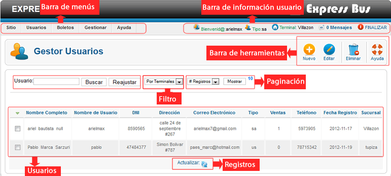
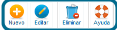
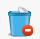
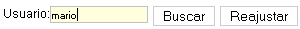
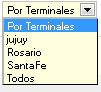
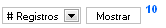
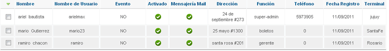
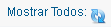

Ayuda Gestor de Usuarios
Contenido:
- Vista General
- Barra de Menús
- Barra de Información Usuario
- Barra de Herramientas
- Busqueda
- Filtro
- Paginación
- Usuarios
- Registros
Vista General
Barra de Menús

La barra de menús nos permite tener un acceso direccto un sector del sistema, permite una mejor navegación por el sistema.
La barra de menús varia en base al tipo de usuario logeado (niveles), si ingresa el super admin tendra mayores opciones en la barra de menús, adiferencia de un usuario de nivel bajo solo vera la barra de menús relacionado con el cargo que este ocupa.
Barra de Información Usuario

La barra de información usuario nos muestra la información del usuario Logeado, también nos permite tener acceso directo a mensajesprovenientes de otros usuarios del sistema, podemos finalizar la aplicación de forma segura haciendo clic en Finalizar.
Barra de Herramientas
Esta el la barra de herramientas del gestor de usuarios, cada botón nos permite ejecutar una acción en concreto, a continuación explicamos el funcionamiento de cada botón.
Nuevo
Este botón nos permite agregar un nuevo usuarios al sistema. se abrira una ventana con un formulario en la cual tendremos que llenar con los datos del nuevo usuario y a continuacion guardar.
Editar
Este botón nos permite editar la información de un usuario. para utilizar esta opción primero seleccionamos un usuario de la lista.
Se abrira una ventana con los datos del usuario y ahí mismo podremos actualizar con los nuevos datos al usuario, por último guardamos los cambios.
 Eliminar
Este botón nos permite eliminar de forma permanete un usuario seleccionado, utilize esta opción a menos que este realmente seguro de eliminar un usuario.
Busqueda
Esta opción nos permite buscar un usuario dentro del sitema.El método de busqueda puede ser por nombre de usuario, terminales, nombre real, apellido, o número de documento.
La busqueda solo se realizara a nivel de terminal, solo el super administrador podra realizar busquedas a nivel global.
Filtro
El filtro nos permite ver los usuarios por terminal.simplemete seleccionamos de la lista la terminal y nos mostrara todos los usuarios que trabajan en esa terminal.
Esta opción solo podra ser visto por el super administrador, otros usuarios no podran ver esta opción.
Paginación
Esta opción nos permite seleccionar de la lista desplegable el número de resgistros o usuarios a mostrar por página. el número al lado del botón Mostrar nos indica el número de registros actuales a mostrar.
Usuarios
Esta lista nos nos muestra todos los usuarios registrados en la terminal actual. también nos muestra la información del los usuarios.
Registros
Este botón nos permite actualizar la lista de usuarios, generalmente es utilizado cuando se utiliza el filtro y se desea volver al estado inicial.